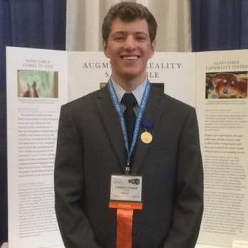
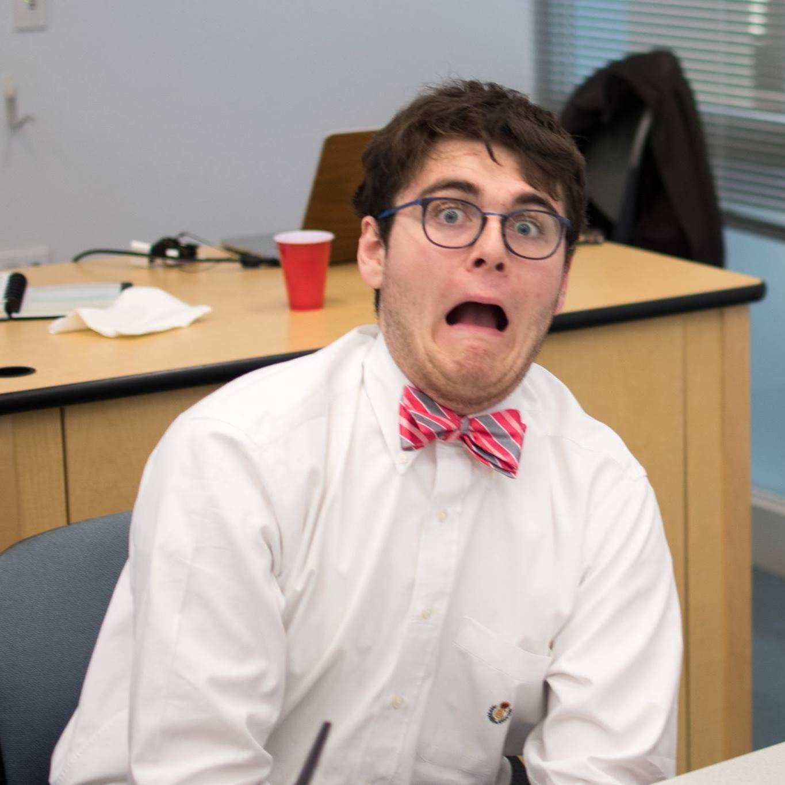
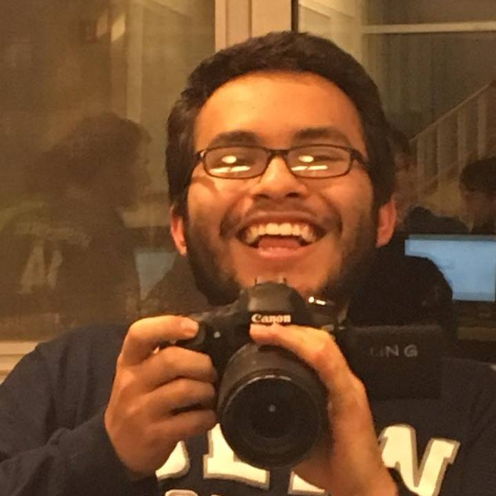

Kian RaissianMech:E, Class of 2020I'm Kian, and I'm a Mechanical Engineer with a passion for Product Design. Through the course of this project, my learning goal was to practice my mechanical design skills and work in SolidWorks to create the mechanical system for the project. In addition to holding a passionate love for CAD, I am also a cellist, an Ultimate Frisbee player for Olin's Ultimate Team, and an avid longboarder. |

Chris AringECE, Class of 2020I'm Chris, while I am an Electical Computer Engineer, I have a large focus in software development. I love taking code and applying to a larger/greater physical system to create something that, when combined, in greater than each part. For this project I worked to connect software and the physical world by creating the program that takes Midi files and prints them out. Most of my spare time is spent trying to create / implement the random ideas that pop into my mind all day. |

Nicholas ShermanECE, Class of 2020I'm Nick, an Electrical Computer Engineering major with, as I like to say, a "concentration in Computing" (I plan on pursuing a career in Software Engineering when I graduates). In my free time, I spin oxbow meteor ("puppyhammer") in OFAC, serve on the Foundry Board as head of Startup Fairs, help lead the Malware Analysis Lab, and play only a few too many board games. For POE, I wanted to get more accustomed to embedded programming and working with mechanical constraints when designing projects. |

Yichen JiangECE, Class of 2020I am Yichen, a sophomore pursuing Electrical Computer Engineering at Olin. I'm passionate about badminton and robotics. I also love doing origami and watching Marvel movies in my free time. My personal learning goal in this project is to get better with electrical system design and integration and also have more practice with Arduino embedded programming. |

Ray CamachoECE, Class of 2020I’m Raymundo Camacho. Ray for short. I am currently a Sophomore at Olin College with a major in Electrical Computer Engineering. With no prior experience in coding or engineering in general before coming to Olin, I have been learning and taking every failure as a chance to improve in the next situation. For the PoE project, I tried embedded programming for the first time. |